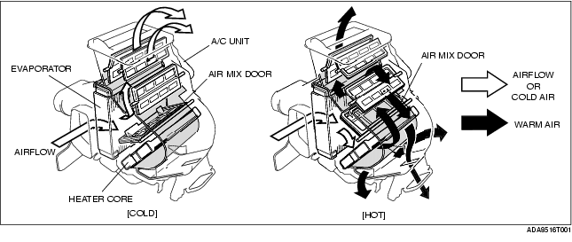

A/C UNIT OPERATION
id071100101400
Air Mix Door Operation
• The air mix door, installed in the A/C unit, controls HOT or COLD position, depending on the position of the temperature control dial. As a result, airflow distribution changes, and the airflow temperature is controlled.

Airflow Mode Door Operation
• The airflow mode doors move to VENT, BI-LEVEL, HEAT, HEAT/DEF, or DEFROSTER position, depending on the position of the airflow mode selector dial. As a result, airflow mode changes.

Evaporator
• The double-tank drawn cup is the same as the previous model except that a new refrigerant flow pattern has been adopted. Due to this, size and weight reduction is achieved while maintaining performance.

Expansion Valve
• The expansion valve causes a sudden decrease in the pressure of the liquid refrigerant. This atomizes the refrigerant, making it easier for the evaporator to vaporize it. The expansion valve also regulates the flow volume of the refrigerant sent to the evaporator.
• The amount of refrigerant delivered to the evaporator is adjusted by the opening angle of the ball valve in the expansion valve.
• Opening angle is adjusted by a balance of the R-134a pressure (Pb) in the diaphragm, and a composite force of evaporator discharge pressure (PI) against the lower part of the diaphragm and spring force (Fs) pushing up the ball valve. When PI increases, the temperature of the temperature sensor near the diaphragm rises and the Pd heated by the R-134a in the diaphragm increases. When the Pd increases more than PI + Fs, the diaphragm is pushed down, and the shaft attached to end of the temperature sensor rod pushes down the ball valve, increasing the amount of liquid refrigerant flow. When the evaporator discharge refrigerant temperature decreases, PI + Fs increases more than Pd, the ball valve is pushed up, and the amount of liquid refrigerant flow decreases.